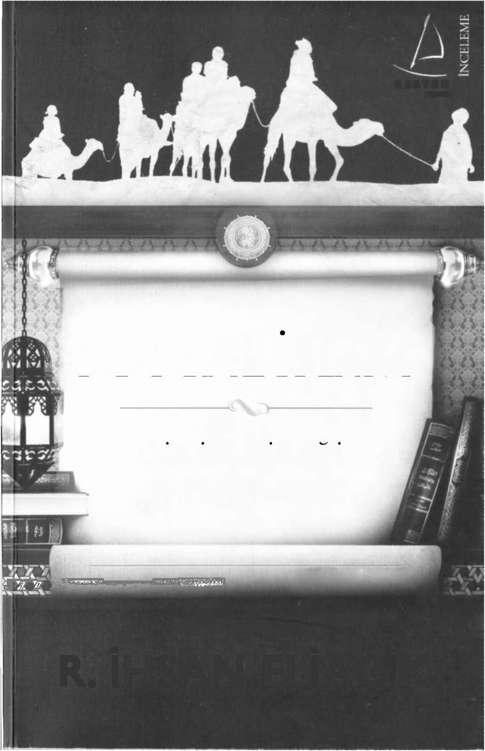

DESTEK
yayınevi
SOSYAL SLAM
D I N I N D I R E Ğ I
P A Y L A Ş ı M D ı R
R. İHSAN ELİAÇIK
DESTEK YAYINEVİ: 186
ARAŞTIRMA-İNCELEME: 62
SOSYAL İSLAM / R. İHSAN ELİAÇIK
Her hakkı saklıdır. Bu eserin aynen ya da özet olarak hiçbir bölümü, telif
SOSYAL İSLAM
hakkı sahibinin yazılı izni alınmadan kullanılamaz.
Genel Yayın Yönetmeni: Ertürk AKŞUN
Dinin direği paylaşımdır
Editör: Zuhal DOĞAN
Teknik Hazırlık: İlknur MUŞTU
Kapak: İlknur Muştu
R. I H S A N E L I A Ç ı K
1. BASKI : Kasım 2011
Yayıncı Sertifika No: 13226
ISBN 978-605-4455-83-6
© Destek Medya Prodüksiyon&Yayınevi
İnönü Cad. 33/4 Gümüşsüyü
Beyoğlu / İstanbul
Tel: (0212) 252 22 42
Fax : (0212) 252 22 43
inkılap Yayın Sanayi ve Tic. A.Ş
inkılap Kitabevi Baskı Tesisleri
I
Matbaa Sertifika No: 10614
p
Çobançeşme Mah. Altay Sk. No: 8 Yenibosna - Bahçelievler / İstanbul
Tel: (0212) 496 11 11
DESTEK
yayınevi
R. İHSAN ELİAÇIK
Yazar ve düşünür. 23 Aralık 1961de Kayseri'de doğdu. Kayseri ve
Kırşehir'deki 'değişik okullarda ilk, orta ve lise öğrenimini tamamladı
(1980). Erciyes Üniversitesi İlahiyat Fakültesinde okudu (1985-1990). İla-
hiyat Fakültesi nden ayrılarak bağımsız yazarlık hayatına başladı...
30 yılı aşkın süredir düşünce ve yazı hayatına devam ediyor. Şu ana kadar
20 kitabı yayımlandı. Evli ve beş çocuk babası. Arapça ve İngilizce biliyor.
İstanbul'da yaşıyor.
ESERLERİ
. İtikat Üzerine (1992)
• İslam ve Sosyal değişim (1994)
• Devrimci İslam (1995)
• İslam'ın Yenilikçileri (üç cilt, 2000)
. Adalet Devleti; Ortak İyinin İktidarı (2003)
• İhyadan İnşaya İslam Düşüncesi (2003)
. İslam'ın Üç Çağı (2004)
. Mehmet Akif (2004)
• Muhammed İkbal (2004)
. Aliya İzzet Begoviç (2004)
• Yaşayan Kuran; Türkçe Meal (2006)
• Yaşayan Kuran; Türkçe Meal-Tefsir (üç cilt 2006)
• Daru's-Selam; Evrensel adalet ve barış yurdu (2006)
. Gerçek Hayat Dini (2006).
• Nüzul sırasına göre Yaşayan Kuran; Türkçe Meal-Tefsir (tek cilt 2007)
. Mülk Yazıları I (2009)
• Hanginiz Muhammed (2010)
. Mülk Yazıları 1+11(2011)
. Bana Dinden Bahset (2011)
. Bu Belde (2011)
• Kurana Giriş (2011)
İçindekiler
Kur anda Din Adamı Eleştirileri 58
Kur'an'da "Üsttekiler" Ve "Alttakiler" 68
Hırsız Kimdir? 105
"Tek Çeşit Yemek" Ve "Samirî'nin Buzağısı" 125
Kendi Elleriyle Yonttuklarına Tapanlar 137
En Büyük Eşitleyici Olarak Ölüm 157
"Eskilerin Masalları" 166
Allah "Eşitliği" Takdir Etti 177
Gecenin Ve Gündüzün Güçleri 185
Açlık Günlerinde "Allah"ın Yüzü 216
İslam'ın İki Büyük Şiarı 235
"Bir Elime Ayı, Bir Elime Güneşi Verseniz..." 256
Bir Şehir (Medine) Nasıl Kurulur? 263
Yeni Başlayanlar İçin Siyaset Rehberi 268 KUR'AN'DA "HAYIR!" SESLERİ
Muhterislere Panzehir: Zühd 273
Yeni Sınıfın "Simon"ları 282
Muhafazakâr Zamparalığa Dinî Kılıf: Çok Eşlilik 298
Kuranın nüzul sırasına göre ilk "Hayır!" ( Kellâ) veya aynı an-
Ölmüş Firavun un Cesedi 311
lamda "Bilakis, hayır, öyle değil" (Bel) dedikleri acaba nedir? Bu
Kürt Sorunu, Kanlı Çanak Ve Haceru'l-Esved 317
önemli. Çünkü ilk neye hayır denmişse esas itiraz da onadır ve en
Zaman Tünelinde Bir Hesaplaşma 323
önemli sorun olarak da o görüluyordur.
Kuranda nüzul sırasına göre yaklaşık ilk 40 sure boyunca 16
"Hayır!" denilen sure yeri tespit ettim. Sure içlerindeki tekrarları
da katarsanız 20'yi geçiyor. İlk mesajlar boyunca âdeta çığlık çığlığa
bir itiraz ve hayır sesleri yükseliyor. Hiç atlamadan sırasıyla dizdim.
Altlarda da kısa açıklamalarla izahat yaptım. Bakın, bunlar nereler.
[HAYIR! İnsan zenginliği kendine yeterli görünce tuğyan eder.
Oysa sonunda Rabb'inedir dönüş.
Bak şu bir kulu içtenlikle yönelirken yasaklamaya kalkana...
HAYIR! Bu yaptıklarına bir son vermezse onu alnından tutup
sürükleyeceğiz.
O yalancı, ar damarı çatlamış alnından.
O zaman çağırsın toplanıp durduklarını
9
R. İhsan Eliaçık
Sosyal, İslam
Biz de çağıracağız zebanileri,
Gözünün ö n ü n d e oğullarıyla,
HAYIR! Sakın ona boyun eğme, sen secde et ve yaklaş!]
Nimetimi döşedikçe döşediğim o adamı...
(Alak; 6-14, 15-19)
Hâlâ gözü doymuyor; verdiğimden daha fazlasını istiyor.
HAYIR! O ayetlerimize karşı inat etti.
K u r a n ı n nüzul sırasına göre ilk suresi olan Alak peş peşe "Ha-
O n u dimdik bir yokuşa süreceğim.]
yır!" (Kellal) itirazları ile başlıyor.
(Müddesir;ll-15)
Görüldüğü gibi K u r a n ı n nüzul sırasına göre ilk suresi zenginlik
Rivayete göre burada kastedilen şahıs "Kâbe çetesinin" ele-
ile tuğyan arasında ilişki kurarak başlıyor. Kuran, ilk sosyal tespit
başlarından tefeci bezirgân Velid bin Muğire idi. Hadsiz hesapsız
olarak "zenginliğe" dikkat çekerek başlıyor. İlk olmasının anlamı
zenginliği vardı. Mekke'den Taif e kadar uzanan, deve, at ve koyun
şu ki sonraki bütün "üsttekileri" niteleyen ayetler bununla ilgilidir:
sürüleri; Taif'in bağ ve bahçeleri, sulak arazileri, bol nakit para-
Mal biriktiren ( nıustağnî) servetiyle azgınlık eder (tuğyan), serve-
sı, kendisinin bile hesabını tutamayacak kadar çok serveti vardı.
tine yaslanarak büyüklenir ( mustekbir), emredip yasaklar koyarak
O n u n için kendisine Velid bin Muğire el-Vahid (Zenginlikte tek,
zulmeder (zâlim), mülküyle ortak koşar (müşrik), hegemonya kur-
eşi benzeri olmayan Muğire oğlu Velid) denmekteydi (Razi, Kurtu-
maya yeltenir (ceberrut), gururlanır (mağrur), inkâr eder (münkir),
bi, Taberi). Bugünkü tabirle o bir para babasıydı. O n u n için ayette
yok sayar (mulhid)...
"şehrin en zengin tek adamı" olarak anılmasına nazire olarak "tek
Demek ki "tuğyan", kişinin "zenginliğini" kendine yeterli gör-başına yarattığım" deniyor.
mesi (müstağni) ve ardından bu zenginliğe, yani mal ve iktidar gü-
Uzayıp giden mal (mâlen memdûd), gözünün ö n ü n d e oğullar
cüne dayanarak emir ve yasak (nehy) koymaya başlaması ile oluyor.
(benine şuhûdâ), onun için döşedikçe döşediğim (mehhedtü lehu
Buna bir toplumda mal ve iktidar sahiplerinin (üsttekilerin) halk
temhidâ) ifadeleri, şehrin bu eşşiz/tek olarak anılan en büyük zen-
(alttakiler) üzerinde kurduğu "hegemonya" diyoruz. Şu halde Ebu
ginini tasvir içindir. K u r a n şehrin en büyük zenginini hedef tahta-
Cehil'in şahsında anlatılmak istenen zenginlerin mustağnîleşerek
sına oturtmakta ve âdeta "İşe buradan başlayacaksınız" demekte-
insanlar üzerinde emir ve yasak (nehy) koymaya kalkması ve böyle-
dir...
ce haddini aşması (tuğyan) toplumların en önemli sorunu oluyor.
Dikkat ediniz! Şehrin en büyük zenginine "Hayır!" (Kellal) di-
Dikkat ediniz! Müstağnilere ve bunların tuğyan ve hegemonya-
yerek başlıyor bu Kitab.
sına "Hayır!" (Kellal) diyerek başlıyor bu Kitab.
[HAYIR! Ay dile gelsin!
[Tek başına yarattığım o adamı bana bırak
Biten gece dile gelsin!
Uzayıp giden mal verdiğim,
Ağaran tan yeri dile gelsin!
10